113 年國中教育會考自然試題與答案
這一頁是民國 113 年國中教育會考自然的整份歷屆試題，共 50 題，題目與標準答案出自心測中心 會考歷屆試題（依著作權法 §9，考試試題不受著作權保護），其中 50 題附有詳解。以下逐題列出題幹、選項與答案；要計時作答或記錄成績，請用線上練習。
線上作答這一科 →
全部 50 題
第 1 題
戰場上士兵為了避免被敵軍瞄準，通常不會以直線前進，而會以之字形的路線前進。圖(一)實線表示直線的甲路線，虛線表示之字形的乙路線，由X點移動至Y點採用甲、乙兩種不同路線的位移與路徑長關係，下列何者正確？
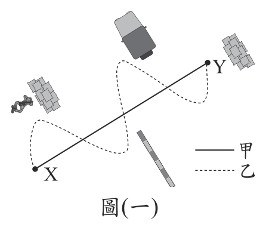
- （A）位移大小：甲＝乙；路徑長：甲＝乙
- （B）位移大小：甲＝乙；路徑長：甲＜乙
- （C）位移大小：甲＜乙；路徑長：甲＝乙
- （D）位移大小：甲＜乙；路徑長：甲＜乙
答案：（B）
詳解與考點
正解：題幹比較甲、乙兩種走法，關鍵是分辨位移與路徑長。位移只看起點 X 到終點 Y 的直線距離與方向，甲、乙起終點相同，所以位移大小相等。路徑長是實際走過軌跡的總長，乙為之字形來回繞行，比甲的直線路徑長，故路徑長甲＜乙。因此「位移甲＝乙、路徑長甲＜乙」，B 為正解。
A：誤把位移或路徑長判為相等，未區分直線位移與實際路程，故錯誤。
C：同樣混淆位移與路徑長，故錯誤。
D：誤認直線路線的位移較小；位移只由共同的起終點決定，故錯誤。
本題考點：位移——由起點到終點的直線距離與方向；路徑長——實際行走軌跡的總長；判準——起終點相同則位移相同，繞行較多則路徑長較大。
第 2 題
木糖醇是一種可以代替蔗糖的食品添加物。若要知道木糖醇是否和乙醇一樣都是醇類，應查詢木糖醇的何項資訊？
- （A）分子量
- （B）組成的原子種類與排列方式
- （C）組成的原子總數是否超過1000個
- （D）氫和氧的原子數目比是否為1：1
答案：（B）
詳解與考點
正解：題幹要判斷木糖醇是否與乙醇同為醇類，關鍵是醇類的官能基與原子鍵結排列，而非元素數量。查詢組成的原子種類與排列方式，才能確認是否含有醇類特有的－OH及其鍵結位置，故 B 為正解。
A：分子量只是質量資訊，分子量相近不代表同為醇類，錯誤。
C：原子總數只是數量資訊，即使超過1000個也不能判定官能基，錯誤。
D：氫、氧原子數目比為1:1不能保證具有醇基，原子排列不同仍可能是不同類物質，錯誤。
本題考點：物質分類——依原子種類與鍵結排列判斷；醇類——須辨識特有官能基－OH；數量與結構——分子量、原子總數或比例不能單獨決定物質類別。
第 3 題
圖(二)為臺灣一週的氣溫預報圖，呈現不同地區的氣溫隨時間變化情況，圖中橫坐標的刻度代表當日正午12點。若媒體想根據圖(二)，以簡易標題說明未來幾天的天氣概況，下列哪一說法最合適？
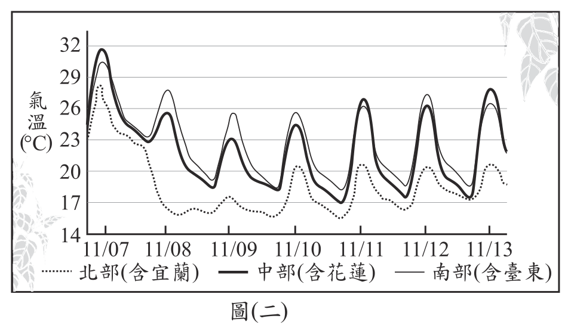
- （A）11/07起，北部轉冷，中、南部變更熱
- （B）11/08起，全臺連日豪雨持續一週
- （C）11/08起，冷空氣南下，當日北部氣溫驟降
- （D）11/10起，中部天氣趨於穩定，日夜溫差逐日變小
答案：（C）
詳解與考點
正解：題目所示氣溫曲線的橫軸為每日正午12點，關鍵是11/08後北部曲線明顯下探。北部氣溫驟降符合冷空氣南下先影響北部的情形，因此 C 為正解。
A：11/07起的曲線重點是北部轉冷，不能解讀為中、南部更熱。
B：圖中沒有連日豪雨的資訊，且各地氣溫仍有起伏，不能推論全臺持續一週降雨。
D：中部在11/10後仍隨日期震盪，日溫差並未逐日縮小。
本題考點：氣溫曲線判讀——先確認橫軸時間與各區曲線，再比較特定日期前後的升降；冷空氣影響——北部常先出現較明顯的降溫。
第 4 題
圖(三)為元素週期表的一部分，無法從圖中知道下列何項資訊？
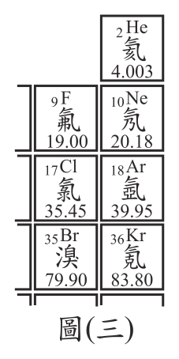
- （A）氯原子與氬原子的質子數分別為多少
- （B）氖原子與氪原子是否有相似的化學性質
- （C）氦原子與氪原子在自然界中含量何者比較多
- （D）1莫耳的氯氣(Cl2)與1莫耳的溴(Br2)何者質量比較大
答案：（C）
詳解與考點
正解：「無法從圖中知道」。圖(三)每一格只提供原子序（格內左下小字）、元素符號、中文名與原子量四項欄位。氦與氪在自然界中的含量多寡屬於元素豐度資料，週期表並不記載，因此無從得知，C 為正解。
A：格內的原子序即質子數，氯為17、氬為18，直接讀格就有，不屬於無法知道。
B：氖與氪同列在圖最右一行（第18族），同族元素最外層電子組態相似、化學性質相近，由族別位置即可推得，不屬於無法知道。
D：圖中已給氯原子量35.45、溴原子量79.90，可算出1莫耳Cl2約70.90公克、1莫耳Br2約159.80公克再比較大小，不屬於無法知道。
本題考點：週期表可讀資訊——原子序（＝質子數）、原子量、族別位置；由族別推同族化學性質相似，由原子量推莫耳質量；判準——凡問元素在自然界的含量（豐度）、發現年代、價格等非表列欄位，一律屬於「無法從圖中得知」。
第 5 題
人體副甲狀腺分泌的激素是經由X所運送，若此激素分泌過多，會影響骨骼中的Y含量，可能造成骨質疏鬆。根據上述說明，推論X和Y最可能為下列何者？
- （A）X為血液，Y為鈣
- （B）X為血液，Y為鉀
- （C）X為消化液，Y為鈣
- （D）X為消化液，Y為鉀
答案：（A）
詳解與考點
正解：題幹的「激素」指內分泌腺分泌後直接進入血液運送的訊息物質；副甲狀腺素分泌過多會促使骨骼釋放鈣，使骨骼中的鈣流失。A 的 X 為血液、Y 為鈣，符合說明，故為正解。
B：激素確由血液運送，但副甲狀腺素影響的是骨骼中的鈣，非鉀，錯誤。
C：骨骼中的 Y 可為鈣，但激素不是經由消化液運送，錯誤。
D：消化液不是激素的運輸途徑，且鉀與題述骨質疏鬆無直接關聯，錯誤。
本題考點：內分泌運輸——激素分泌後由血液循環送至標的器官；副甲狀腺素作用——分泌過多會使骨骼釋放鈣，增加骨質疏鬆風險。
第 6 題
小健家中電扇插頭處的電線被老鼠破壞而導致銅線裸露，如圖(四)。小健取來絕緣膠帶試圖修復，步驟如圖(五)。家人認為小健的修復方式並不適當，其原因最可能為下列何者？
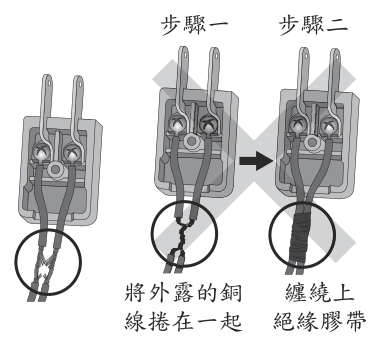
- （A）插電後電扇雖會轉動，但轉動速率下降
- （B）插電後電扇雖會轉動，但耗電量將上升
- （C）插電後電線會發生短路，可能引發電線走火
- （D）插電後，流過電扇的電流將變大，導致電扇轉動速率過快而發生危險
答案：（C）
詳解與考點
正解：題幹的關鍵是兩股裸露銅線被捲在一起，原本應分隔的導線因而直接相接。插電後火線與中性線短路，電流不經電扇而走捷徑，瞬間電流極大、導線發熱，可能引發電線走火，故 C 為正解。
A：短路後電扇不會正常運轉，不是仍會轉動但速率下降，故錯誤。
B：問題是短路造成異常大電流與發熱，不是電扇正常運作下耗電量上升，故錯誤。
D：兩線相接後電流不會正常流過電扇；它看起來對，是因為電流變大確實是短路現象，但危險在導線走火，不是電扇轉得過快，故錯誤。
本題考點：短路——兩條應分隔的導線直接相接，電流走低電阻路徑；電流熱效應——短路大電流會使導線發熱；判準——發現裸線相接時，優先判斷短路與走火風險。
第 7 題
虎門銷煙為清朝銷毀鴉片的歷史事件。把海水引入浸泡池浸泡鴉片，之後再加入石灰等物質，石灰遇水會改變水溫，此改變也利於將鴉片溶於水中，等退潮時再排入海中。關於上述銷毀鴉片的說明，下列何者最合理？
- （A）石灰溶於水為放熱反應，而高溫使鴉片更易溶於水中
- （B）石灰溶於水為吸熱反應，而高溫使鴉片更易溶於水中
- （C）鴉片浸泡海水後會使水溫上升，使其與石灰反應速率加快
- （D）鴉片浸泡海水後會使水溫下降，使其與石灰反應速率加快
答案：（A）
詳解與考點
正解：題幹指出加入石灰遇水會改變水溫，關鍵是氧化鈣遇水為放熱反應，水溫升高有助物質較快溶於水。反應為 CaO+H2O→Ca(OH)2，故 A 為正解。
B：石灰遇水是放熱而非吸熱反應，錯誤。
C：水溫升高的原因是石灰與水反應，不是鴉片浸泡海水，錯誤。
D：同樣誤把水溫變化歸因於鴉片；而降低溫度通常不會使反應速率加快，錯誤。
本題考點：氧化鈣遇水——CaO 與 H2O 反應放熱，使水溫升高；溫度與溶解——升溫通常使物質溶解速率增加。
第 8 題
圖(六)是世界文學名著《小王子》中的某段場景與內容：圖(六) 若以箭頭表示太陽光方向與地球自轉方向，下列何者最符合文中畫雙底線處的狀態？
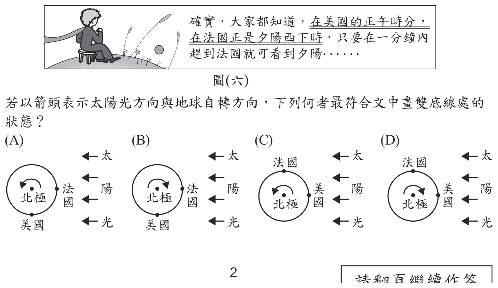
本題選項為上圖中的 A／B／C／D，請對照圖片作答。
答案：（C）
詳解與考點
正解：題幹雙底線處同時出現「美國正午、法國夕陽」，應以地球自轉及日照位置判讀。正對太陽的一側為正午；法國在即將進入暗面的昏線處為夕陽；地球由西向東自轉，從北極上空看為逆時針。只有C同時符合三項條件，故 C 為正解。
A：未能同時使美國位於正午面、法國位於日落側，或自轉方向錯誤。
B：把地球自轉方向或正午、日落的位置畫反，錯誤。
D：同樣未同時符合美國正午、法國夕陽與由西向東自轉，錯誤。
本題考點：地球自轉——方向為由西向東；晝夜判讀——正對太陽為正午，進入暗面前為夕陽；圖像比對——須同時核對日照位置與自轉箭頭。
第 9 題
醃漬高麗菜時，常會在高麗菜的葉片上灑鹽。圖(七)為正常的葉片細胞示意圖，表(一)中的圖為小凱與小萍預測醃漬後的葉片細胞可能的示意圖。推論醃漬後的示意圖與造成葉片細胞變化的原因，下列何者正確？表(一) 圖(七)
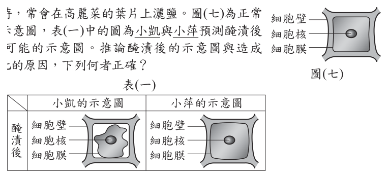
- （A）小凱的圖正確，水由細胞內流至外界
- （B）小凱的圖正確，鹽由細胞內流至外界
- （C）小萍的圖正確，水由外界流至細胞內
- （D）小萍的圖正確，鹽由外界流至細胞內
答案：（A）
詳解與考點
正解：題幹的關鍵是葉片灑鹽後，細胞外溶液濃度較高，觸發滲透作用。水由細胞內流向外界，細胞失水後原生質體縮小並與細胞壁分離；小凱的圖符合此樣貌，故 A 為正解。
B：造成細胞形態改變的是水分子經滲透移動，不是鹽由細胞內流向外界，錯誤。
C：醃漬後細胞應失水萎縮，不是水由外界流入而膨脹，錯誤。
D：小萍的圖不符合失水情形，且鹽移動不是本題細胞變化的直接判準，錯誤。
本題考點：滲透作用——水由低溶質濃度處移向高溶質濃度處；醃漬——細胞外濃度升高，水由細胞內流出；植物細胞失水——原生質體縮小並與細胞壁分離。
第 10 題
圖(八)為中洋脊附近的剖面示意圖，並標示中洋脊旁的X處與離中洋脊較遠的Y處、Z處海洋地殼。根據上述，下列何者最可能為X處、Y處、Z處的海洋地殼年齡關係？圖(八)
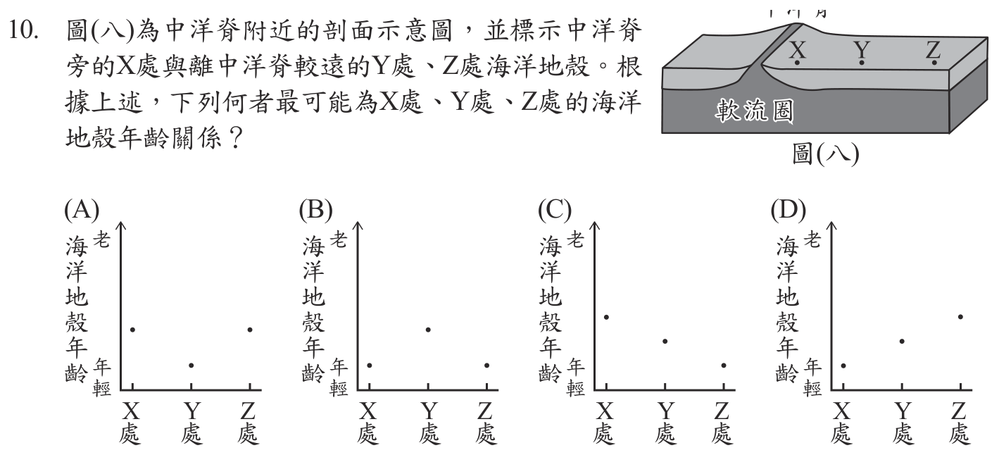
本題選項為上圖中的 A／B／C／D，請對照圖片作答。
答案：（D）
詳解與考點
正解：題幹的關鍵是中洋脊旁的X與距中洋脊較遠的Y、Z；海底擴張時岩漿在中洋脊形成新海洋地殼，再向兩側推移，因此離中洋脊愈遠，形成愈久、年齡愈老。X最近最年輕、Y次之、Z最遠最老，年齡為X<Y<Z，故 D 為正解。
A：把X或近中洋脊處畫成最老，違反新地殼在中洋脊形成的原理，錯誤。
B：把中間的Y畫成最老，未依離中洋脊距離排序，錯誤。
C：把X或近中洋脊處畫成最老，同樣違反離脊愈遠愈老的規律，錯誤。
本題考點：海底擴張——中洋脊持續形成新的海洋地殼；年齡判準——距中洋脊愈近愈年輕、愈遠愈老，先比較距離再排列年齡。
第 11 題
將裝有紅棕色二氧化氮(NO 2)氣體的密閉玻璃瓶放入冰水中，二氧化氮會互相結合產生無色的四氧化二氮(N2O 4)氣體，瓶內的顏色會逐漸變淡，反應式為：正反應 2 NO2 N2O4 逆反應當溫度下降至某溫度，且保持恆定，一段時間後玻璃瓶內的顏色便不再改變。關於顏色不再改變時反應速率的說明，下列何者正確？
- （A）正反應速率等於逆反應速率，且速率為0
- （B）正反應速率等於逆反應速率，且速率不為0
- （C）正反應速率不等於逆反應速率，且兩速率均不為0
- （D）正反應速率不等於逆反應速率，且其中一速率為0
答案：（B）
詳解與考點
正解：題幹的「顏色不再改變」表示密閉瓶中 NO2 與 N2O4 的濃度已穩定，系統達到動態平衡。此時正反應速率等於逆反應速率，但兩反應仍持續進行，所以速率不為0，B 為正解。
A：若正、逆反應速率都為0，表示反應完全停止，並非動態平衡，錯誤。
C：正、逆反應速率不相等時，各物質濃度仍會改變，瓶內顏色不會維持不變，錯誤。
D：兩速率不相等也會造成濃度改變；它看起來對，是因為顏色穩定容易被誤解為反應停止，但平衡時兩方向反應都仍在進行，錯誤。
本題考點：化學動態平衡——正反應速率＝逆反應速率；平衡判準——各物質濃度維持恆定，但正、逆反應速率皆不為0。
第 12 題
老師選用基因型皆為Aa的雄、雌長翅果蠅進行交配，並要求學生觀察 1000 隻第一子代果蠅的表現型與數量。已知小坪僅觀察到4隻長翅果蠅及6隻短翅果蠅後，就直接推測其結果如表(二)。老師在小坪的紀錄本寫下：「理論上子代數量不太可能出現這樣的比例。」根據上述資訊，老師寫下該評語是因為理論上第一子代預測比例較可能為何？
- （A）應全為長翅
- （B）應全為短翅
- （C）長翅與短翅的比例應約為1：3
- （D）長翅與短翅的比例應約為3：1
答案：（D）
詳解與考點
正解：兩親本基因型皆為 Aa，要用單因子雜交表求子代表現型比例。Aa×Aa 的配子各為 A、a；組合為 AA、Aa、Aa、aa，基因型比＝1:2:1。長翅為顯性，AA、Aa 都表現長翅，故長翅：短翅＝3:1；1000 隻約為長翅 750、短翅 250，所以 D 正確。
A：Aa×Aa 可產生 aa，短翅不會完全消失。
B：Aa×Aa 也可產生 AA、Aa，長翅不會完全消失。
C：把顯、隱性表現型的多寡顛倒；長翅應約為短翅的 3 倍。它看起來對，是因為基因型中 aa 只有一格，不能把比例方向看反。
本題考點：單基因遺傳——Aa×Aa 的基因型比為 AA：Aa：aa=1:2:1；顯隱性表現型——顯性表現型包含 AA、Aa，因此顯性：隱性＝3:1。
第 13 題
如圖( 九)，將銅線製成的兩相同螺線形線圈 (螺線管)，分別與相同的檢流計連接，另取兩個相同的磁鐵，一個N 極向上，一個N 極向下，放在離線圈上端高度20 cm處，由靜止自由掉落通過線圈，觀察磁鐵剛進入線圈時，甲、乙兩檢流計所測得的感應電流方向及大小，下列何者最合理？圖(九)
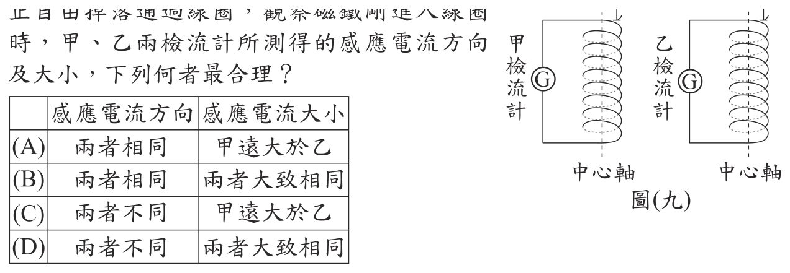
本題選項為上圖中的 A／B／C／D，請對照圖片作答。
答案：（D）
詳解與考點
正解：兩磁鐵自相同高度20 cm由靜止自由落下，剛進入線圈時速率相同，磁通量變化率相當，所以感應電流大小大致相同；但朝下的磁極一為N極、一為S極，磁通量變化方向相反，依冷次定律感應電流方向不同。D 符合，故為正解。
A：磁極朝向相反時，感應電流方向不會相同；且兩磁鐵的落下條件相同，大小不會一大一小。
B：兩電流大小可相同，但磁極相反使感應電流方向相反，不會相同。
C：電流大小取決於磁通量變化率；相同高度自由落下時速率相同，不能判為甲遠大於乙。
本題考點：法拉第電磁感應——磁通量改變會產生感應電流，變化率相近時電流大小相近；冷次定律——磁場方向相反造成磁通量變化方向相反時，感應電流方向也相反。
第 14 題
圖(十)為某河川鯰魚族群在甲、乙、丙、丁不同時期數量變化的情形，下列何者最能說明甲、乙、丙、丁的變化情形？
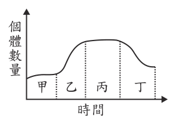
- （A）甲：出生＋遷入＜死亡＋遷出
- （B）乙：出生＋遷入＞死亡＋遷出
- （C）丙：出生＋死亡＞遷入＋遷出
- （D）丁：出生＋死亡＜遷入＋遷出
答案：（B）
詳解與考點
正解：題幹要由族群數量曲線判斷四種因素的收支；乙時期曲線明顯上升，表示出生加遷入大於死亡加遷出，故 B 為正解。
A：甲不是數量下降期，不能判為出生加遷入小於死亡加遷出，方向錯誤。
C：丙為高峰平穩期，總增加量應等於總減少量；「出生＋死亡」與「遷入＋遷出」不是判斷族群增減的正確分組，錯誤。
D：丁為下降期，應是出生加遷入小於死亡加遷出；選項改以出生加死亡和遷入加遷出比較，且不符合判準。
本題考點：族群數量變化——出生與遷入使數量增加，死亡與遷出使數量減少；曲線上升時前者大於後者，下降時前者小於後者，平穩時兩者相等。
第 15 題
圖(十一)為北半球某處地面附近的等壓線示意圖，曲線為等壓線，關於利用圖中資訊所做的推論，下列何者最合理？
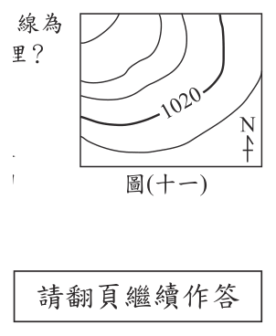
- （A）圖中等壓線密集處的氣壓值比稀疏處高
- （B）圖中標示1020的該條等壓線，為氣壓最高的位置
- （C）若再有一條等壓線的數值，即可判斷此地大致溫度
- （D）若再有一條等壓線的數值，即可判斷此地大致風向
答案：（D）
詳解與考點
正解：題幹只有一條標示1020的等壓線，關鍵是再知道另一條等壓線的數值，才能判定氣壓由哪一側往哪一側遞減。風大致由高壓吹向低壓，且北半球的風受地球自轉偏向力影響向右偏；得知另一數值後即可判斷氣壓梯度方向，進而推得大致風向，故D為正解。
A：等壓線密集表示氣壓梯度較大、風可能較強，不能表示該處氣壓值一定比等壓線稀疏處高，錯誤。
B：1020只是該條等壓線的氣壓值；未比較鄰近等壓線前，不能斷定它是最高氣壓的位置，錯誤。
C：等壓線提供的是氣壓資訊，沒有溫度資料，無法據此判斷大致溫度，錯誤。
本題考點：等壓線判讀——等壓線密集代表氣壓梯度大，不代表氣壓較高；風向判讀——先由至少兩條有數值的等壓線判定高、低壓方向，再考慮北半球向右偏。
第 16 題
圖 ( 十二) 為汽車上測量輪胎某項物理量的裝置，圖中的p s i為其中數值的單位。此單位可表示為 1 psi ＝ 1 磅力平方英寸，其中磅力為力的單位，英寸為長度的單位。根據上述資訊，此項裝置的功能最可能為量測汽車輪胎的哪一項物理量？
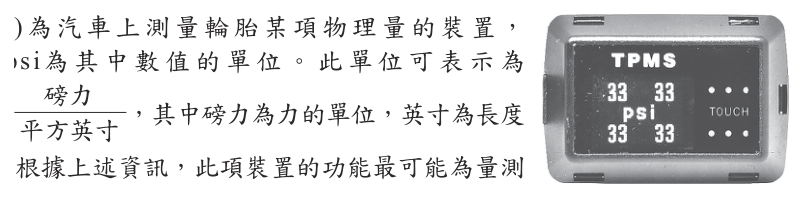
- （A）每秒轉動次數
- （B）胎內的氣體壓力
- （C）施於地面的推力
- （D）與地面間的摩擦力
答案：（B）
詳解與考點
正解：psi＝磅力／平方英寸，分子是力、分母是面積，正符合壓力＝力÷受力面積。圖示裝置以psi顯示數值，表示量測輪胎內氣體的壓力，故B為正解。
A：每秒轉動次數是頻率，單位應為次／秒，不是力÷面積，錯誤。
C：推力的單位是力，例如磅力或牛頓；psi比單純的力多除以面積，錯誤。
D：摩擦力也是力，單位不是psi，錯誤。
本題考點：壓力的定義——壓力＝力÷面積；單位判讀——psi中的磅力／平方英寸表示單位面積所受的力。
第 17 題
牙齒酸蝕是指酸性物質會使牙齒外層的琺瑯質軟化，而容易損耗。小涵進行實驗一，探討不同pH值與牙齒酸蝕後重量減少的關係。他選用形狀大小很相近的豬牙齒，分別浸泡不同濃度的鹽酸數日，實驗一的結果如表(三)。小涵又進行實驗二，取形狀大小很相近的豬牙齒，分別浸泡在pH值介於2～4之間的甲、乙、丙三杯飲料中數日，發現牙齒重量減少百分比為丙＜甲＜乙。若實驗二只考慮pH值的影響，則依實驗一的結果，關於甲、乙、丙三杯飲料的推測，下列何者最合理？
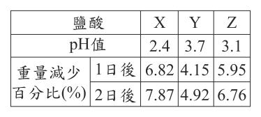
- （A）乙杯最酸，其pH值最大
- （B）乙杯最酸，其pH值最小
- （C）丙杯最酸，其pH值最大
- （D）丙杯最酸，其pH值最小
答案：（B）
詳解與考點
正解：題幹限定只考慮pH值，應依實驗一判準「pH愈小，酸性愈強，牙齒重量減少百分比愈大」推論。實驗二的重量減少為丙＜甲＜乙，故酸蝕程度為乙＞甲＞丙；乙最酸，pH值最小，故B為正解。
A：乙確實最酸，但最酸的pH值應最小，不是最大，錯誤。
C：丙的重量減少最少，表示酸蝕最弱、最不酸；且最酸也不會對應pH最大，錯誤。
D：丙不是最酸，錯誤。
本題考點：pH值與酸性——pH愈小，酸性愈強；實驗結果推論——在其他條件相同時，以牙齒重量減少百分比比較酸蝕程度。
第 18 題
以下為某篇關於重力波的報導：「重力波」是愛因斯坦預言的物理現象之一。當帶有質量的物體進行加速度運動時，會在時空中產生波動，這種波就是重力波，重力波的傳播不需要介質，其傳播速率與電磁波相同，都以光速傳播……。根據上述資訊，下列有關重力波的敘述何者最合理？
- （A）與水波一樣都屬於力學波
- （B）與電磁波一樣都屬於力學波
- （C）與光波一樣都不屬於力學波
- （D）與超聲波一樣都不屬於力學波
答案：（C）
詳解與考點
正解：題幹明示重力波「傳播不需要介質」，此條件正是區分力學波與非力學波的關鍵。光波也不需要介質、可在真空中傳播，因此 C 的敘述最合理。
A：水波傳播需要介質，屬力學波；重力波不需介質，兩者不同。
B：電磁波不需介質，並不屬於力學波；選項把電磁波的分類說錯。
D：超聲波是聲波，傳播需要介質，屬力學波，與重力波不同。
本題考點：力學波與非力學波——傳播需要介質者如水波、聲波與超聲波，屬力學波；不需要介質、可在真空傳播者如光波與電磁波，屬非力學波；題幹已明示「不需要介質」時，先據此判別。
第 19 題
已知甲～丁四者均為純物質，其所含元素的質量百分比如表(四)。表中哪些物質不可能是有機化合物？ (原子量：C＝12、H＝1、O＝16)
表(四)| 物質 | C | H | O |
|---|
| 甲 | 75 | 25 | 0 |
| 乙 | 27 | 0 | 73 |
| 丙 | 100 | 0 | 0 |
| 丁 | 52 | 13 | 35 |
- （A）甲、乙
- （B）乙、丙
- （C）丙、丁
- （D）甲、丙
答案：（B）
詳解與考點
正解：取乙 100 g 計算，碳為 27÷12=2.25 mol，氧為 73÷16=4.5625 mol，莫耳數比約為 1:2，可對應 CO2。CO2 雖含碳，通常不歸類為有機化合物；丙只含碳元素，是碳的單質而非化合物，因此乙、丙皆不可能是有機化合物，故 B 為正解。
A：甲的碳、氫莫耳數分別為 75÷12=6.25 mol、25÷1=25 mol，比例為 1:4，可對應 CH4，可能是有機化合物，不能列入。
C：丁的碳、氫、氧莫耳數分別約為 52÷12=4.33 mol、13÷1=13 mol、35÷16=2.19 mol，比例約為 2:6:1，可對應 C2H6O，可能是有機化合物，不能列入。
D：甲可能是有機化合物，不能列入；丙雖確實不是有機化合物，但此組合仍因甲而錯誤。
本題考點：有機化合物的判別不能只看是否含氫；須先把各元素的質量百分比換算成莫耳數比，再辨認可能的化學式。CO2 是含碳但通常不歸類為有機化合物的例外，純碳則是單質而非化合物。
第 20 題
已知刺絲胞動物皆生活在水中。小花看到某網友提到：「所有刺絲胞動物都生活在海洋中。例如海月水母就是一種生活在海洋中的刺絲胞動物」，若小花想驗證「所有刺絲胞動物都生活在海洋中」這句話是否成立，則下列何種方法最能達到此目的？
- （A）從海洋中找到海月水母
- （B）從海月水母身上找到刺絲胞
- （C）從淡水中找到一種刺絲胞動物
- （D）從海洋中找到很多種刺絲胞動物
答案：（C）
詳解與考點
正解：題幹要檢驗「所有刺絲胞動物都生活在海洋中」這個全稱命題，最有效的方法是尋找一個反例。C 若在淡水中找到一種刺絲胞動物，例如水螅，就能證明原命題不成立，故為正解。
A：在海洋中找到海月水母只是一個符合命題的例子，不能驗證所有刺絲胞動物都生活在海洋中，錯誤。
B：從海月水母身上找到刺絲胞只確認其分類，無法判斷所有刺絲胞動物的棲地，錯誤。
D：在海洋中找到很多種刺絲胞動物仍不能排除淡水也有刺絲胞動物；它看起來對，是因為蒐集很多支持例子有說服力，但全稱命題可由一個反例推翻，錯誤。
本題考點：全稱命題的否證——要推翻「所有」的敘述，只要找到一個不符合的反例；科學驗證判準——支持例不能證明全稱命題，反例可直接否定它。
第 21 題
以下為某學生在同一時間、同一花圃內，種植甲、乙、丙三種不同品牌薄荷種子的步驟： 1. 在花圃內畫設L甲、L乙、L丙三條種植的路線。 2. 分別平均在路線L甲灑上甲種子、路線L乙灑上乙種子、路線L丙灑上丙種子。 3. 每天在三條路線上以相同灌溉方式補充土壤的水分。 4. 一週後，記錄三條路線上發芽的種子數。表(五)為學生記錄此實驗的相關數據，若三條路線的生長環境都相同，根據此結果，下列敘述何者最合理？表(五)
表(五)| 品牌 | 路線 | 灑落的種子數 | 發芽的種子數 |
|---|
| 甲 | L甲 | 500 | 100 |
| 乙 | L乙 | 400 | 80 |
| 丙 | L丙 | 350 | 80 |
- （A）甲、乙兩品牌的發芽比例相等
- （B）乙、丙兩品牌的發芽比例相等
- （C）甲品牌比乙、丙品牌容易發芽
- （D）丙品牌比甲、乙品牌不容易發芽
答案：（A）
詳解與考點
正解：比較「發芽比例」，必須用發芽種子數÷灑落種子數，而非只比發芽數。甲為100÷500=0.2，乙為80÷400=0.2，兩品牌的發芽比例相等，故A為正解。
B：丙為80÷350≈0.23，與乙的0.2不相等，錯誤。
C：甲的發芽比例0.2與乙相同，不能說甲比乙容易發芽，錯誤。
D：丙的發芽比例約0.23，三者最高，反而最容易發芽，錯誤。
本題考點：比例比較——不同總數的資料要以部分÷總數比較；發芽率判讀——比例較大才表示較容易發芽。
第 22 題
小書與小花將某株被子植物莖部的形成層外圍構造剔除，發現此株植物逐漸因根部無法獲得養分而死亡，以下為兩人對此株植物的推論：小書：此株植物較可能為雙子葉植物。小花：此株植物較可能為單子葉植物。下列對兩人推論的敘述何者正確？
- （A）兩人均合理
- （B）兩人均不合理
- （C）只有小書合理
- （D）只有小花合理
答案：（C）
詳解與考點
正解：題幹中形成層外圍被剔除後，根部無法獲得養分，表示由葉向下運送有機養分的韌皮部受損。具有形成層、且維管束環狀排列的莖較可能是雙子葉植物，因此小書合理、小花不合理，C 為正解。
A：小花認為是單子葉植物不合理，單子葉植物的維管束散生，通常不具形成層，錯誤。
B：小書的判斷符合雙子葉植物的維管束構造，不能說兩人均不合理，錯誤。
D：剔除形成層外圍構造會破壞韌皮部，使有機養分無法送至根部，正是雙子葉植物情形，錯誤。
本題考點：雙子葉植物莖——維管束環狀排列且具形成層；韌皮部運輸——葉製造的有機養分經韌皮部向下運送至根部。
第 23 題
某篇關於氫應用的報導說明如下：「金屬多以氧化物的形式封藏於岩石礦物中，可利用氫和氧易起反應的特性，將氧從礦物中移除，留下可用的純金屬和水。」關於上述畫線處提及的反應，下列說明何者最合理？
- （A）因為氫被氧化，所以是氧化還原反應
- （B）因為礦物被氧化，所以是氧化還原反應
- （C）因為金屬氧化物溶於水呈酸性，所以是酸鹼中和反應
- （D）因為金屬氧化物溶於水呈鹼性，所以是酸鹼中和反應
答案：（A）
詳解與考點
正解：題幹的反應中，氫與金屬氧化物的氧結合生成水。氫的氧化數由0升為＋1，表示失去電子而被氧化；金屬離子由正價降為0，表示得到電子而被還原，所以是氧化還原反應，A 為正解。
B：金屬氧化物中的金屬是得到電子而被還原，不是被氧化，錯誤。
C：反應不涉及 H⁺ 與 OH⁻ 的中和，不能因金屬氧化物的酸鹼性判為酸鹼中和反應，錯誤。
D：同樣沒有酸鹼中和的條件；它看起來對，是因為金屬氧化物有時可呈鹼性，但此處的判斷依據是氧化數改變，錯誤。
本題考點：氧化還原判準——反應中有元素氧化數改變即為氧化還原反應；氧化與還原——氧化數上升為氧化、氧化數下降為還原。
第 24 題
阿華在赤道某處地面透過儀器觀測太陽，兩日內地面上可見太陽明亮面積的百分比變化如圖(十三)。已知觀測期間天氣晴朗無雲，則下列有關第二日9時至12時之間所見的現象敘述，何者最合理？
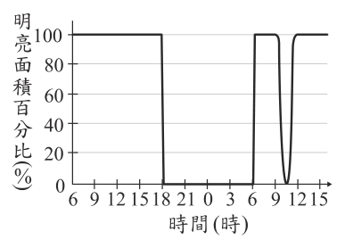
- （A）當日應該是農曆十五
- （B）當日白天長度是一年中最短的
- （C）此現象是月球的影子落在地球上所造成
- （D）此現象是阿華隨地球自轉進入夜晚所造成
答案：（C）
詳解與考點
正解：第二日9時至12時太陽明亮面積在白天短時間內先降後升，關鍵是這種短暫遮蔽現象，判斷為日食。日食是月球運行到日、地之間，月球影子落在地球上遮住部分陽光所造成，故C為正解。
A：日食對應月球位於日、地之間的農曆初一，不是農曆十五，錯誤。
B：圖示是數小時的短暫變化，不是整日白天長度變短的現象，錯誤。
D：若隨地球自轉進入夜晚，太陽明亮面積應長時間為0；圖中僅短暫下降後回升，錯誤。
本題考點：日食成因——月球位於日、地之間，其影子落在地球上；現象判讀——短暫的太陽明亮面積減少不同於日夜交替或季節造成的日長改變。
第 25 題
圖(十四)為、兩種岩類的照片及說明，為一種作用。的碎屑物質經過長時間的後，會成為。下列有關、、的敘述，何者最合理？圖(十四)
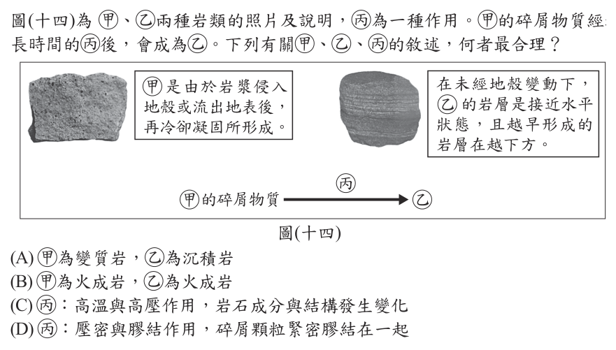
- （A）為變質岩，為沉積岩
- （B）為火成岩，為火成岩
- （C）：高溫與高壓作用，岩石成分與結構發生變化
- （D）：壓密與膠結作用，碎屑顆粒緊密膠結在一起
答案：（D）
詳解與考點
正解：題幹說甲的碎屑物質經長時間作用後成為乙，關鍵是碎屑沉積物形成沉積岩的成岩過程。甲是岩漿冷卻凝固形成的火成岩，乙呈水平層狀且愈早形成愈在下方，為沉積岩；丙應為壓密與膠結，使碎屑顆粒緊密膠結在一起，故D為正解。
A：甲為火成岩，不是變質岩，錯誤。
B：乙為沉積岩，不是火成岩，錯誤。
C：高溫與高壓使岩石成分與結構改變是變質作用，不是碎屑物質成岩的丙，錯誤。
本題考點：三大岩類——岩漿冷卻凝固形成火成岩，水平層狀沉積物形成沉積岩；成岩作用——碎屑經壓密與膠結形成沉積岩。
第 26 題
將一顆裝在絕緣支架的不帶電金屬球，以感應起電的方式使金屬球帶正電，如圖(十五)。若接著再以手輕觸金屬球使其接地後，金屬球的帶電情形及其原因最可能為下列何者？
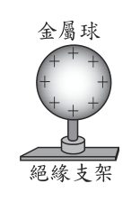
- （A）不帶電，因地球的電子經由手流向金屬球
- （B）不帶電，因金屬球的正電荷經由手流至地球
- （C）帶正電，因感應起電後再接地，金屬球的電性不受影響
- （D）帶負電，因地球的電子經由手流向金屬球，使金屬球內負電荷總數多於正電荷
答案：（A）
詳解與考點
正解：金屬球帶正電表示電子不足；以手觸碰接地後，地球提供可移動的電子，電子經由手流入金屬球補足不足的電子，直到恢復電中性。因此球不帶電，A 正確。
B：金屬中的正電荷不會像電子般經由手流到地球，移動的是電子。
C：接地會提供與地球交換電子的通路，電性會受影響。
D：電子流入只補足原先缺少的電子至電中性，不會多到使球帶負電。它看起來對，是因為電子確實由地球流入球，但忽略接地後會在中性時停止流動。
本題考點：感應起電——物體帶正電代表電子不足；接地——地球可作為電子來源或去處；電荷移動判準——固體導體中主要移動的是電子，接地後以恢復電中性為止。
第 27 題
在一大氣壓下，將一塊質量100 g的冰塊置於燒杯中，以穩定熱源均勻加熱，其溫度與加熱時間的關係如圖(十六)。根據此圖判斷下列何者正確？
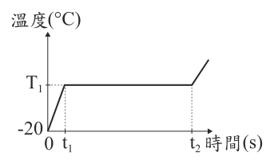
- （A）T1的數值為0
- （B）t1可以表示冰塊的熔點
- （C）當時間大於t2，燒杯中的水只會以氣態存在
- （D）在t1～t2期間，燒杯中的水是以固體與氣體共存的狀態
答案：（A）
詳解與考點
正解：加熱曲線的水平段；在1大氣壓下，冰熔化時持續吸熱但溫度維持不變，熔點為0°C。圖中水平段的溫度是T1，因此T1=0，故A為正解。
B：熔點是溫度T1，不是表示時刻的t1，錯誤。
C：時間大於t2後，水仍會先以液態升溫，不會只以氣態存在，錯誤。
D：t1～t2是熔化期，水以固體與液體共存，不是固體與氣體共存，錯誤。
本題考點：加熱曲線——水平段表示相變時吸熱、溫度不變；熔化判讀——在1大氣壓下冰的熔點為0°C，熔化時固液共存。
第 28 題
美環將兩種不同的天氣系統分為甲、乙類，並舉例說明，如表(六)所示。但他的舉例有錯誤，應更正為下列何者才合理？表(六)
表(六)| 分類 | 甲 | 乙 |
|---|
| 天氣系統說明 | 地面附近的空氣會由周圍流入其中心 | 地面附近的空氣會由其中心往周圍流出 |
| 舉例 | 颱風、太平洋暖氣團 | 蒙古大陸冷氣團 |
- （A）颱風移到乙類，另外兩者不變
- （B）太平洋暖氣團移到乙類，另外兩者不變
- （C）颱風移到乙類，蒙古大陸冷氣團移到甲類
- （D）颱風與太平洋暖氣團移到乙類，蒙古大陸冷氣團移到甲類
答案：（B）
詳解與考點
正解：表中甲類是地面附近空氣由周圍流入中心，代表低氣壓；乙類是空氣由中心往周圍流出，代表高氣壓。颱風是低氣壓、蒙古大陸冷氣團是高氣壓，原本位置正確；太平洋暖氣團屬高氣壓，應移到乙類，故B為正解。
A：把原本屬低氣壓的颱風移到乙類，錯誤。
C：同時誤把颱風移到乙類、蒙古大陸冷氣團移到甲類，錯誤。
D：颱風與蒙古大陸冷氣團原本分類正確，無須更動，錯誤。
本題考點：氣壓系統——地面空氣由周圍流入中心是低氣壓，由中心流向周圍是高氣壓；例證分類——颱風屬低氣壓，太平洋暖氣團與蒙古大陸冷氣團屬高氣壓。
第 29 題
在自來水中加入氯氣雖然可以消毒，但氯氣可能會進一步反應產生致癌物。下列實驗，想知道將自來水靜置一段時間或加熱能否降低餘氯量，實驗結果如表(七)和表(八)：表(七) 表(八) 依據表中結果判斷，下列說明何者最合理？
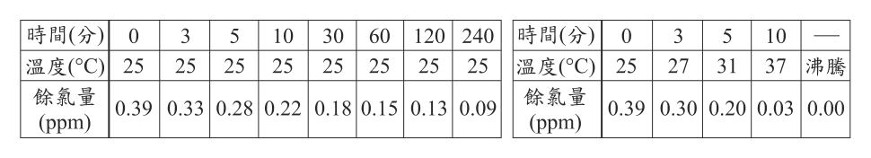
- （A）僅由表(七)的結果，可以判斷溫度高低與能否降低餘氯量有關
- （B）僅由表(八)的結果，可以判斷靜置時間長短與能否降低餘氯量有關
- （C）由表(七)結果可以做出在10℃時，餘氯量也會隨靜置時間增加而下降的結論
- （D）以表(七)數據做為參照，可使用表(八)的結果來判斷加熱能否降低餘氯量
答案：（D）
詳解與考點
正解：要判斷加熱能否降低餘氯量，關鍵是把加熱結果與未加熱、僅靜置的資料比較。表(七)在25°C下比較靜置時間，可作為單純放置的參照；再與表(八)的加熱結果對照，才能判斷加熱是否降低餘氯量，故D為正解。
A：只看表(七)不能分離溫度與其他條件對餘氯量的影響，錯誤。
B：只看表(八)不能分離靜置時間長短與加熱的影響，錯誤。
C：表(七)是在25°C進行，不能據此推論10°C時也有相同結果，錯誤。
本題考點：控制變因——一次只改變一項條件才能判斷其影響；對照組——比較加熱與未加熱資料時，須以同類的靜置資料作參照。
第 30 題
青蛙的染色體有13對，其中1對為性染色體。在不考慮突變的情況下，雌蛙卵巢內經減數分裂後的卵子，應有幾條性染色體？
- （A）1條
- （B）2條
- （C）13條
- （D）26條
答案：（A）
詳解與考點
正解：題幹問減數分裂後卵子的性染色體數，關鍵是減數分裂會使每一對染色體各留下 1 條。青蛙有 13 對染色體，其中性染色體為 1 對。卵子中性染色體數＝1 對中留下 1 條＝1 條，故 A 為正解。
B：2 條是減數分裂前 1 對性染色體的條數，未將染色體數目減半。
C：青蛙共有 13 對染色體，減數分裂後每一對各留下 1 條，所以卵子全部染色體共有 13 條；但題目問的是性染色體，不是全部染色體。
D：26 條是減數分裂前體細胞全部染色體的總數＝13×2=26，未符合卵子形成後數目減半的條件。
本題考點：減數分裂——配子形成後，每一對染色體各留下 1 條；性染色體數——先辨認題目問的是性染色體而非全部染色體，1 對性染色體在卵子中為 1 條。
第 31 題
小茵居住在臺灣，圖(十七)為他就讀學校的教室平面圖。小茵發現每日正午時，陽光從窗戶照射進教室內的範圍會變化，圖中白色區域為某日受到正午陽光直接照射到的範圍。之後他連續二個月每天觀察，發現正午陽光直接照射到的範圍，從第1排逐漸擴大至第3排，再逐漸縮至第2排。推測下列何者最可能是小茵觀察的時間區間？
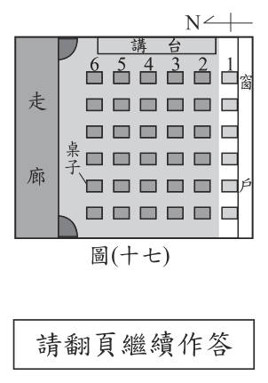
- （A）春分前至春分後
- （B）夏至前至夏至後
- （C）秋分前至秋分後
- （D）冬至前至冬至後
答案：（D）
詳解與考點
正解：題幹的照射範圍先由第 1 排擴大到第 3 排，再縮到第 2 排，表示正午陽光先射入愈深、再變淺。臺灣教室若陽光由南窗射入，正午太陽仰角愈低，光線射入愈深；範圍最深代表仰角最低。正午太陽仰角在冬至最低，之後再升高，所以觀察時間應跨越冬至，D 為正解。
A：春分前後太陽仰角也會明顯改變，容易因此被選；但這段期間仰角持續升高，沒有先降低至全年最低點再升高的轉折，不能形成照射範圍先加深再變淺，錯誤。
B：夏至前後正午太陽仰角最高，陽光應射入最淺，與題幹先擴大到第 3 排不符，錯誤。
C：秋分前後正午太陽仰角持續降低，並非最低點的轉折，不能解釋照射範圍先達最深後縮回，錯誤。
本題考點：太陽高度角與季節——正午太陽仰角愈低，固定方向窗戶的陽光射入室內愈深；臺灣冬至正午太陽仰角最低，夏至最高；照射範圍先加深再變淺，表示觀察時間跨越冬至。
第 32 題
一座游泳池裡有多少的尿？一座游泳池裡有多少的尿？安賽蜜是優酪乳中的甜味劑，不易被人體消化，會由尿液排出體外。研究團隊檢測加拿大游泳池的安賽蜜濃度，一座84萬公升游泳池的安賽蜜濃度— 7 g/L，再參考「……」，經換算後，可知該游泳池約含有75公升的為2.1×10 尿液。上述「……」所指的最可能為下列何者？
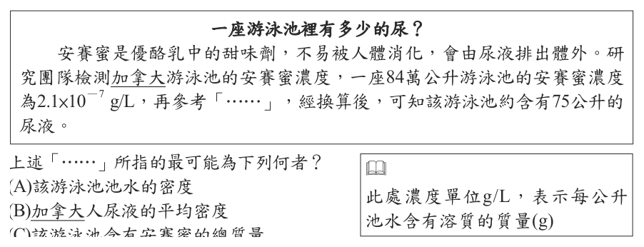
- （A）該游泳池池水的密度
- （B）加拿大人尿液的平均密度
- （C）該游泳池含有安賽蜜的總質量
- （D）加拿大人尿液中安賽蜜的平均濃度 ※ 此處濃度單位g/L，表示每公升池水含有溶質的質量(g)
答案：（D）
詳解與考點
正解：題幹已知游泳池體積84萬公升與安賽蜜濃度2.1×10⁻⁷ g/L，可先求池中安賽蜜總質量，再由該質量反推尿液體積。因此還需要「尿液中安賽蜜的平均濃度」，D 為正解。計算關係為安賽蜜總質量＝池水體積×池水中安賽蜜濃度；尿液體積＝安賽蜜總質量÷尿液中安賽蜜平均濃度。
A：池水密度不能把安賽蜜質量換算成尿液體積，錯誤。
B：尿液平均密度可用於質量與體積的換算，卻不能指出每公升尿液含多少安賽蜜，錯誤。
C：池中安賽蜜總質量可由題目已知的濃度與體積算出，不是「……」所需補充的資料，錯誤。
本題考點：濃度定義——g/L 表示每公升溶液含有溶質的質量；濃度換算——先以體積×濃度求溶質質量，再以溶質質量÷尿液濃度求尿液體積。
第 33 題
圖(十八)為人體的泌尿系統和其所連接血管的示意圖，其中乙血管中的氧氣含量比甲血管多。有關丙器官的生理功能及血液進出丙的路徑，下列敘述何者正確？
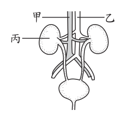
- （A）形成尿素，甲→丙→乙
- （B）形成尿素，乙→丙→甲
- （C）形成尿液，甲→丙→乙
- （D）形成尿液，乙→丙→甲
答案：（D）
詳解與考點
正解：丙是腎臟，關鍵是其功能及乙血管的氧氣含量比甲高。腎臟負責過濾血液形成尿液；含氧量較高的乙為腎動脈，將血液送入腎臟，甲為腎靜脈，將血液送出，路徑為乙→丙→甲，故D為正解。
A：尿素在肝臟形成，不是腎臟；血液路徑也相反，錯誤。
B：尿素不是丙器官形成，錯誤。
C：腎臟雖形成尿液，但甲→丙→乙把血液流向寫反，錯誤。
本題考點：泌尿系統——腎臟過濾血液形成尿液，尿素由肝臟形成；血液循環——動脈血進器官、靜脈血離開器官，含氧較高者為腎動脈。
第 34 題
將圖(十九)甲、乙、丙、丁四個不同材質的實心正立方體分別放入1 L水中，水的密度為1.0 g/cm 3。已知四種物體皆不與水發生化學反應，且不吸水也不溶於水，則根據表(九)判斷，靜止平衡後，哪一個物體在液面下的體積最大？
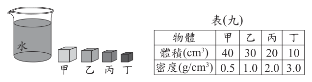
- （A）甲
- （B）乙
- （C）丙
- （D）丁
答案：（B）
詳解與考點
正解：比較液面下體積，也就是排開水的體積，需分別判斷漂浮、懸浮或沉底。甲（40、0.5）漂浮，排水體積為20 cm³；乙（30、1.0）與水密度相同而全沒入，液面下體積為30 cm³；丙（20、2.0）沉底，全沒入為20 cm³；丁（10、3.0）沉底，全沒入為10 cm³。比較後乙最大，故B為正解。
A：甲會漂浮，液面下體積為20 cm³，小於乙，錯誤。
C：丙沉底時液面下體積就是20 cm³，小於乙，錯誤。
D：丁沉底時液面下體積就是10 cm³，小於乙，錯誤。
本題考點：浮力與排水體積——液面下體積等於排開水的體積；密度判讀——密度小於水會漂浮，等於或大於水時可全沒入，仍須比較實際體積。
第 35 題
圖(二十)為某小島發生一次規模為M、震央震度為5弱的震度分布圖，甲、乙、丙為測站位置。表(十)為小方整理這些測站在不同次地震得到的資訊，其中只有一次是圖(二十)地震的資訊。根據上述資訊，M的值或範圍應為下列何者？表(十) 圖(二十)
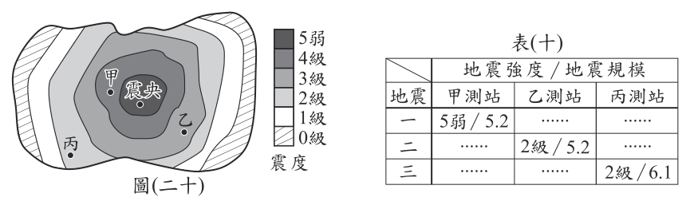
- （A）M＝5.2
- （B）5.2＜M＜6.1
- （C）M＝6.1
- （D）M＞6.1
答案：（C）
詳解與考點
正解：震央震度5弱與甲、乙、丙測站的震度分布，應把各測站在圖上的相對震度與表(十)的同一筆地震資料逐一比對。符合圖(二十)震度由震央向外遞減的那筆資料，其地震規模為6.1，因此M=6.1，故C為正解。
A：規模5.2所對應的表(十)資料與圖中的甲、乙、丙震度分布不符，錯誤。
B：本題可由資料比對得到單一規模值，不需以5.2與6.1之間表示，錯誤。
D：符合圖示的資料規模為6.1，沒有大於6.1，錯誤。
本題考點：震度與規模——規模表示一次地震釋放的能量，為單一值；震度分布——同次地震通常離震央愈遠震度愈小，須以各測站資料整體比對。
第 36 題
已知下列各選項的示意圖，表示由透鏡主軸上P點發射的光線，經過透鏡後的偏折情形，則哪一個選項中透鏡的焦距最可能為10 cm？
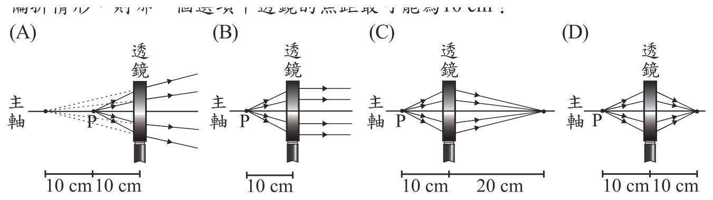
本題選項為上圖中的 A／B／C／D，請對照圖片作答。
答案：（B）
詳解與考點
正解：題幹要判斷焦距 10 cm，關鍵是凸透鏡中物點位於焦點時，折射後的光線會平行主軸。B 圖中 P 到透鏡的距離是 10 cm，且光線經透鏡後平行主軸射出，所以 P 位在焦點，焦距為 10 cm，故 B 為正解。
A：A 的出射光仍發散，表示物點在焦點內，不符合物在焦點、出射平行的條件。
C：C 的出射光會聚形成實像，表示物點在焦點外，錯誤。
D：D 的出射光也會聚形成實像，表示物點在焦點外，錯誤。
本題考點：凸透鏡焦距判讀——物點在焦點上時，出射光平行主軸；光線偏折判斷——出射光發散表示物在焦點內，出射光會聚表示物在焦點外。
第 37 題
已知甲、乙兩種不同的金屬元素分別與同濃度的鹽酸反應，反應後只會產生氫氣與金屬的氯化物。取甲金屬24.3 g與鹽酸反應，另取乙金屬65.4 g與鹽酸反應，兩個反應的金屬都完全耗盡，且產生的氫氣質量均為2.0 g，則比較兩個反應的反應物與產物的質量，下列何者正確？
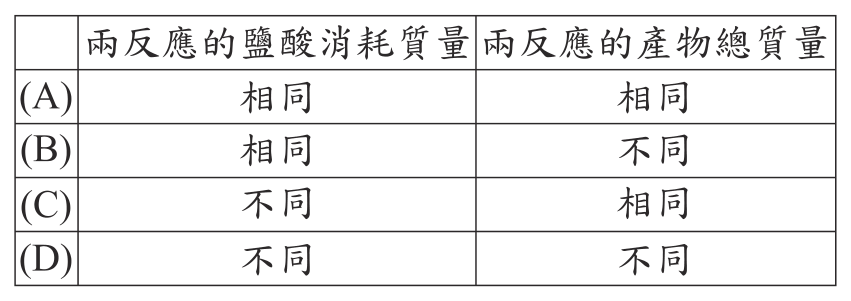
本題選項為上圖中的 A／B／C／D，請對照圖片作答。
答案：（B）
詳解與考點
正解：兩反應產生的氫氣質量都為2.0 g，關鍵是相同氫氣量代表消耗的鹽酸莫耳數相同，因此消耗的鹽酸質量相同。甲、乙金屬質量分別為24.3 g、65.4 g，不相同，形成的金屬氯化物總質量也不同，故B為正解。
A：兩反應的金屬質量不同，依質量守恆形成的產物總質量不會全相同，錯誤。
C：相同的2.0 g氫氣表示消耗的鹽酸相同，不能判為不同，錯誤。
D：相同氫氣量雖對應相同鹽酸量，但兩種金屬的質量不同，不能把產物判為相同，錯誤。
本題考點：化學計量——相同質量的氫氣對應相同莫耳數與相同消耗量的鹽酸；質量守恆——反應物金屬質量不同時，金屬氯化物的總質量也不同。
第 38 題
如圖(二十一)，在無摩擦力的水平面靜置一個質量為 M的木塊，今以水平外力F推動此木塊，使其沿力的方向移動S的距離，外力對木塊所作的功完全轉換為木塊的動能。小明與小華想要讓木塊獲得的動能變為原本的2倍，他們分別提出以下策略：圖(二十一) 兩人的策略是否合理？
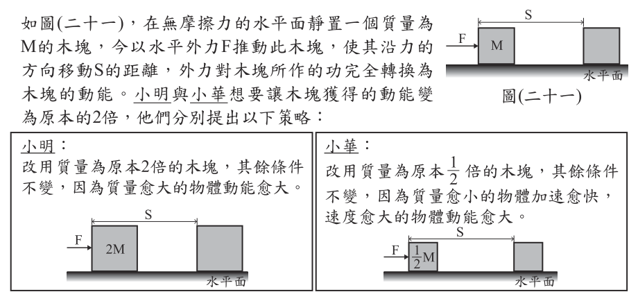
- （A）兩人皆合理
- （B）只有小明合理
- （C）只有小華合理
- （D）兩人皆不合理
答案：（D）
詳解與考點
正解：題幹明示外力作功完全轉為動能，應用功與動能關係Ek=F×S。原本動能為F×S；小明只把質量加倍、F與S不變，動能仍為F×S；小華只把質量減半、F與S不變，動能也仍為F×S。兩人都不能使動能變為2倍，故D為正解。
A：小明與小華的策略都沒有改變F或S，兩人皆不合理，錯誤。
B：小明改變質量不會改變F×S，錯誤。
C：小華改變質量不會改變F×S，錯誤。
本題考點：功與動能——無摩擦且作功全轉為動能時，Ek=F×S；判準——要使動能加倍，須使力F或位移S的乘積加倍，質量只影響速度。
第 39 題
小美在植物圖鑑中看到杜鵑花科(Ericaceae)中的金毛杜鵑(Rhododendron oldhamii) 後，若想要依學名搜尋與此植物同屬但不同物種的植物，則下列何種查詢方式最能達到他的目的？
- （A）學名第一個字為Ericaceae的植物
- （B）學名第二個字為oldhamii的植物
- （C）學名第一個字為Rhododendron的植物
- （D）學名為Rhododendron oldhamii的植物
答案：（C）
詳解與考點
正解：題幹給的學名是 Rhododendron oldhamii，二名法中第一個字是屬名，第二個字是種小名。若要找同屬但不同物種，必須保留相同屬名 Rhododendron，再尋找不同種小名；C 的學名第一個字為 Rhododendron 符合，故為正解。
A：Ericaceae 是杜鵑花科的科名，搜尋它會找到同科植物，範圍比同屬更大。
B：oldhamii 是種小名，只搜尋第二個字不能保證同屬，錯誤。
D：完整學名 Rhododendron oldhamii 指向同一物種，不能找出不同物種；它看起來對，是因為完整名稱最精確，但題目要的是同屬而不同種。
本題考點：生物學名二名法——學名由屬名加種小名組成；分類搜尋——找同屬不同種時固定第一個字的屬名，改變第二個字的種小名。
第 40 題
下列哪一實驗裝置圖最適合用來表示以直流電源在鐵片上鍍銅？
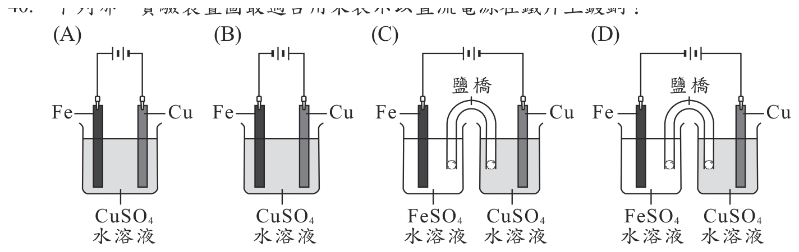
本題選項為上圖中的 A／B／C／D，請對照圖片作答。
答案：（B）
詳解與考點
正解：要在鐵片上鍍銅，應選能讓 Cu²⁺ 在鐵片表面還原析出的裝置。鐵片 Fe 必須接直流電源負極，作陰極；銅片 Cu 接正極，作陽極；電解液須為 CuSO4 溶液。通電後，陰極反應為 Cu²⁺＋2e⁻→Cu，銅析出在鐵片上；陽極的銅溶解補充 Cu²⁺。符合這三項條件的是 B。
A：圖中 Fe 接正極、Cu 接負極，電極極性顛倒；Fe 不是接受電子的陰極，銅便不會鍍在 Fe 上，錯誤。
C、D：兩圖都把 Fe 與 Cu 分置於 FeSO4、CuSO4 兩槽並以鹽橋連接；無論兩圖如何配置電源極性，都不是將被鍍的 Fe 與鍍層金屬 Cu 同置於 CuSO4 溶液中的單槽電鍍裝置，錯誤。
本題考點：電鍍——被鍍物接負極作陰極，鍍層金屬接正極作陽極，電解液提供鍍層金屬離子；鍍銅時 Fe 為陰極、Cu 為陽極、電解液為 CuSO4，陰極析出 Cu。
第 41 題
某工廠進行原料加工的製程如表(十一)。當開始加工時，此原料中酵素X 會持續催化原料中物質甲轉變成物質乙，但超過75℃後就無法再有催化的功能。若僅考慮酵素X的作用，這段加工製程中，哪兩時間點所含物質乙的量最相近？
表(十一)| 步驟 | 開始的時間 | 操作溫度 | 操作時間 |
|---|
| 一 | 10:00 | 25°C | 20分鐘 |
| 二 | 10:20 | 35°C | 10分鐘 |
| 三 | 10:30 | 85°C | 20分鐘 |
| 四 | 10:50 | 35°C | 10分鐘 |
- （A）10:00 和 10:10
- （B）10:15 和 10:25
- （C）10:25 和 10:45
- （D）10:50 和 11:00
答案：（D）
詳解與考點
正解：題幹說酵素 X 持續催化甲轉成乙，但超過 75℃ 後失去催化功能；要找乙量最相近的兩時點，關鍵是找酵素已失活、乙不再增加的時段。25℃、35℃時酵素仍有活性，乙會持續累積；85℃時酵素超過 75℃而失活。之後即使回到 35℃也不能恢復催化功能，因此 10:50 到 11:00 的乙量都維持不變，D 為正解。
A：10:00 到 10:10 時酵素仍有活性，甲持續轉成乙，乙量會增加。
B：10:15 到 10:25 時仍在酵素可作用的階段，乙量會增加。
C：10:25 到 10:45 時尚未進入失活後的固定階段，乙量不會相同。
本題考點：酵素作用——在可作用溫度下，酵素持續使受質轉為產物，產物量隨時間增加；高溫失活——超過耐受溫度後催化功能喪失，即使降回適溫也不會復原。
第 42 題
根據本文，過去食蛇龜曾面臨下列何種問題？
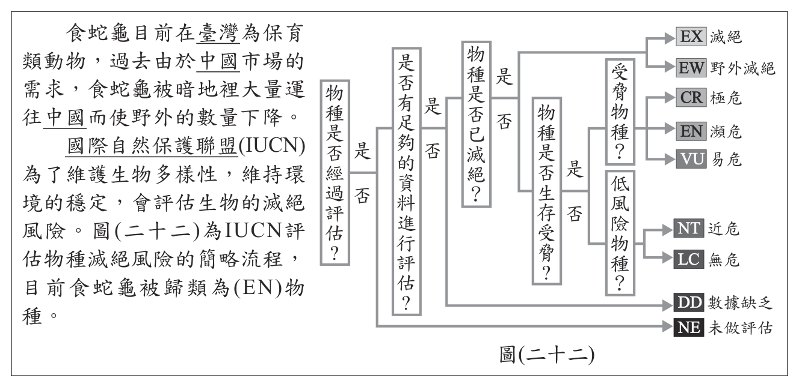
- （A）棲地破壞
- （B）環境汙染
- （C）過度捕捉
- （D）外來種引入
答案：（C）
詳解與考點
正解：官方答案為 C；惟本筆未附題目所稱的本文，現有題幹與選項無法驗證本文是否明示食蛇龜過去面臨過度捕捉，因此刪除原詳解中未見於現有資料的寵物貿易、藥用等具體原因。
A、B、D：棲地破壞、環境汙染、外來種引入是否可排除，必須以本文明示的過去威脅為準；在本文未附於本筆資料的情況下，不能僅因這些都是常見保育議題就逐項判為不符。
本題考點：閱讀理解——題幹出現「根據本文」時，答案與排除理由都須對應文中明示資訊；保育威脅辨識——取得本文後，再區分棲地破壞、環境汙染、過度捕捉與外來種引入。
第 43 題
根據本文，關於食蛇龜在IUCN的分類，下列何者最合理？
- （A）屬於滅絕物種
- （B）屬於低風險物種
- （C）屬於未做評估物種
- （D）屬於生存受脅物種
答案：（D）
詳解與考點
正解：題幹問食蛇龜在 IUCN 的分類，文意指出其因過度捕捉而族群數量銳減，應屬生存受脅物種。IUCN 的極危、瀕危、易危皆屬受脅類別，故 D 為正解。
A：滅絕表示物種已完全消失，與題述仍有食蛇龜族群不符，錯誤。
B：低風險物種不符合族群因過度捕捉而數量銳減的情況，錯誤。
C：未做評估表示尚無分類資料，但題幹已可依文意判定其受威脅狀態，錯誤。
本題考點：IUCN 紅色名錄——極危、瀕危、易危為受脅物種；分類判準——族群因人為捕捉等壓力顯著減少時，不屬低風險或滅絕類別。
第 44 題
根據本文，下列何者最符合該國政府對未來發電方式的期望？
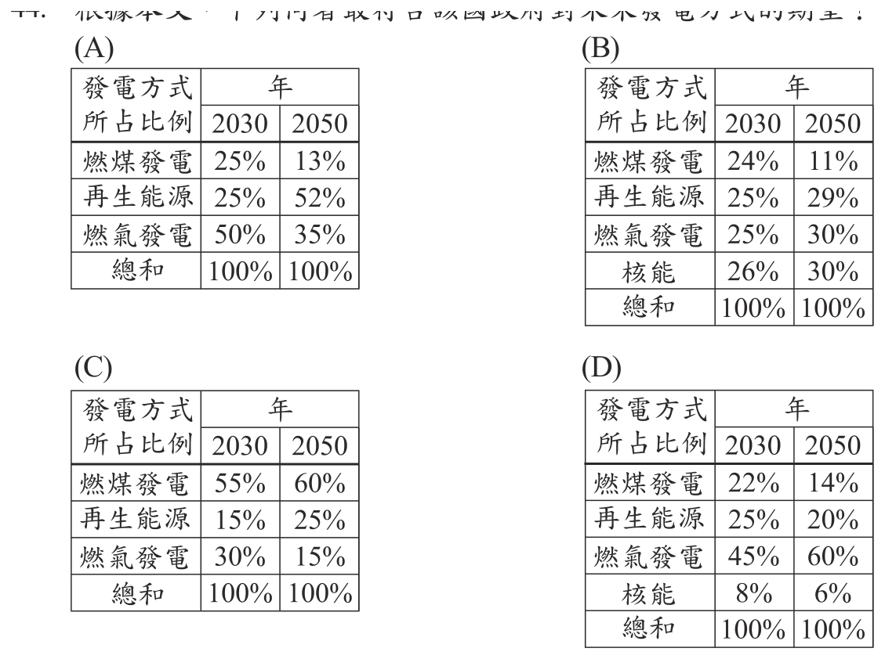
本題選項為上圖中的 A／B／C／D，請對照圖片作答。
答案：（A）
詳解與考點
正解：政府對未來發電方式的期望，應比較2030與2050的配比是否呈現減煤、增再生能源的方向。A中燃煤由25％降為13％，再生能源由25％升為52％，最符合降低高碳排燃煤、提高再生能源占比的期望，故A為正解。
B：雖含核能，但再生能源未呈現明顯成長，不最符合題幹的轉型方向，錯誤。
C：燃煤由55％升為60％，與減少燃煤的期望相反，錯誤。
D：雖含核能，但再生能源未呈現明顯成長，不最符合題幹的轉型方向，錯誤。
本題考點：發電配比表判讀——比較不同年度同一發電方式的占比變化；能源轉型方向——減少燃煤、提高再生能源占比。
第 45 題
根據本文，將燃煤發電改採燃氣發電為主，可達到下列何種目的？
- （A）減少每發一度電時所需耗費的金錢
- （B）減少每發一度電時空氣汙染物的排放
- （C）增加再生能源在整體能源使用的比例
- （D）增加每發一度電時所排放的溫室氣體量
答案：（B）
詳解與考點
正解：題幹比較燃煤與燃氣發電，每發一度電時天然氣燃燒產生的硫氧化物、氮氧化物及粒狀汙染物較少，因此可減少空氣汙染物排放，B 為正解。
A：燃氣發電的成本不一定較低，不能據此判定每度電耗費的金錢減少，錯誤。
C：天然氣不是再生能源，改採燃氣不會增加再生能源在整體能源使用的比例，錯誤。
D：天然氣仍會排放 CO2，但每度電排放量低於燃煤，不是增加，錯誤。
本題考點：燃料與空氣汙染——天然氣相較煤炭，每度電的 SOx、NOx 與粒狀汙染物排放較少；能源分類——天然氣為化石燃料，不是再生能源。
第 46 題
根據圖(二十四)，2021年的「住宅用電」可表示為下列何者？
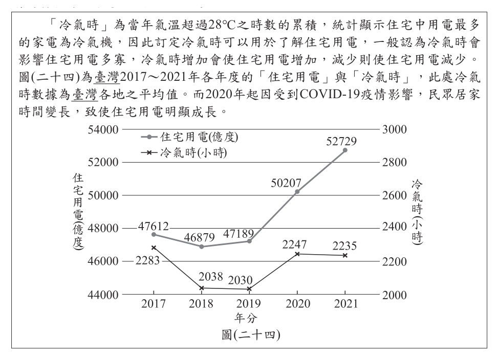
- （A）2.235 × 1010度
- （B）2.235 × 1011度
- （C）5.2729 × 1011度
- （D）5.2729 × 1012度
答案：（D）
詳解與考點
正解：題幹要把圖中2021年住宅用電量改寫為科學記號。圖示數值為5,272,900,000,000度，把小數點從5272900000000移到5.2729，共移12位，所以是5.2729×10¹²度，故D為正解。
A：2.235×10¹⁰的有效數字與圖中住宅用電讀數5.2729不符，且數量級過小，錯誤。
B：2.235×10¹¹的有效數字仍不符圖中讀數，錯誤。
C：5.2729×10¹¹把小數點只算移11位，數值會比原數少10倍，錯誤。
本題考點：科學記號——將數字寫成1以上、10以下的小數乘10的次方；次方判定——小數點向左移幾位，10的指數就是幾，並須保留原讀數的有效數字。
第 47 題
文中提及「一般認為冷氣時會影響住宅用電多寡，冷氣時增加會使住宅用電增加，減少則使住宅用電減少」，下列哪一項數據最符合上述引號中的說法？
- （A）2017～2018年冷氣時與住宅用電的變化情形
- （B）2020～2021年冷氣時與住宅用電的變化情形
- （C）這五年中，冷氣時最低年分與住宅用電最低年分，兩者的對應關係
- （D）這五年中，冷氣時最高年分與住宅用電最高年分，兩者的對應關係
答案：（A）
詳解與考點
正解：引號中的「同向變動」——冷氣時增加則住宅用電增加、冷氣時減少則住宅用電減少，因此要找兩條折線在同一段期間同時上升或同時下降的資料。讀圖(二十四)：2017 年冷氣時 2283 小時、住宅用電 47612 億度；2018 年冷氣時降為 2038 小時、住宅用電也降為 46879 億度。兩者同時下降、方向一致，最符合引號中的說法，故 A 為正解。
B：2020 年冷氣時 2247 小時、住宅用電 50207 億度；2021 年冷氣時降到 2235 小時，住宅用電卻升到52729 億度。一降一升方向相反，正是文中所說疫情使居家時間變長、用電另有成因的反例，錯誤。
C：這五年冷氣時最低的是 2019 年的 2030 小時，住宅用電最低的卻是 2018 年的 46879 億度，兩個最低值不落在同一年，湊不出同向對應關係，錯誤。
D：這五年冷氣時最高的是 2017 年的 2283 小時，住宅用電最高的卻是 2021 年的 52729 億度，同樣不在同一年，反而顯示兩者未必同步，錯誤。
本題考點：雙軸折線圖的相關性判讀——先確認左軸（住宅用電，億度）與右軸（冷氣時，小時）各自對應哪一條線，再比較「同一時間區間內兩條線的變化方向」；要驗證「甲增乙增、甲減乙減」這類敘述，判準是找同向變動的區段，而不是把兩者各自的極值年分配對。
第 48 題
文中「冷氣時」選擇以超過28℃的時數計算，其原因可能與下列何者最相關？
- （A）28℃為臺灣的平均氣溫
- （B）氣溫28℃時冷氣機最耗電
- （C）28℃以上的氣溫，會讓多數民眾選擇開冷氣機
- （D）冷氣機設定為28℃時，冷房效果最佳最為省電
答案：（C）
詳解與考點
正解：題幹以超過28℃的時數定義「冷氣時」，關鍵在於環境氣溫達28℃以上時，多數民眾較可能開啟冷氣機，會影響住宅用電。C 符合這項行為依據，故為正解。
A：28℃不是臺灣的平均氣溫，且平均氣溫不是設定冷氣時門檻的直接依據，錯誤。
B：題目指的是環境氣溫，不是冷氣機運轉到最耗電的溫度，錯誤。
D：冷氣機設定28℃可能較省電，是使用建議，不是以超過28℃計算冷氣時的原因，錯誤。
本題考點：指標設計——指標門檻應連結欲觀察的行為或現象；冷氣時判準——以超過28℃時數估計可能開冷氣的時間，進而了解住宅用電。
第 49 題
圖(二十五)中的二氧化碳濃度變化資料，整張圖所呈現的時間範圍約為多久？
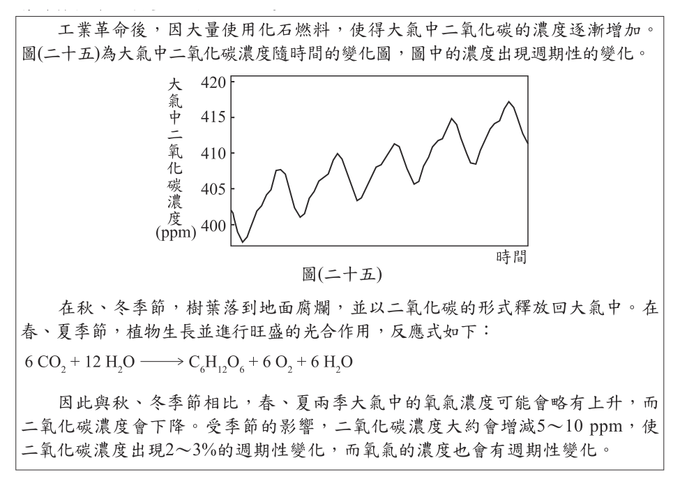
- （A）5個星期
- （B）5個月
- （C）5年
- （D）50年
答案：（C）
詳解與考點
正解：整張圖的橫軸時間跨度，須由橫軸刻度判讀，而非只看曲線有鋸齒狀起伏。圖中二氧化碳濃度呈逐年上升並有季節性變化，橫軸涵蓋約5年，故C為正解。
A：5個星期不足以呈現圖中的逐年與季節性變化，錯誤。
B：5個月仍不足以呈現多個年度的上升趨勢，錯誤。
D：50年的跨度遠大於圖中橫軸刻度所示範圍，錯誤。
本題考點：折線圖橫軸判讀——時間範圍以起訖刻度相減判斷；大氣二氧化碳曲線——可同時呈現季節性起伏與長期逐年上升趨勢。
第 50 題
文末提及「氧氣的濃度也會有週期性變化」，其變化百分比與理由，下列何者最合理？
- （A）因CO2的分子量大於O2，故O2的變化百分比會比2～3%要小很多
- （B）因CO2的分子量大於O2，故O2的變化百分比會比2～3%要大很多
- （C）因大氣中O2的濃度比CO2高得多，故O2的變化百分比會比2～3%要小很多
- （D）因大氣中O2的濃度比CO2高得多，故O2的變化百分比會比2～3%要大很多
答案：（C）
詳解與考點
正解：題幹比較氧氣與二氧化碳的週期性變化百分比。大氣中 O2 濃度約21%，CO2 濃度約0.04%，同樣的物質交換量相對於濃度很高的 O2 所占比例很小，所以 O2 的變化百分比會比 CO2 的2～3%小很多，C 為正解。
A：變化百分比主要取決於變化量相對於原有濃度的比例，不由 O2 與 CO2 的分子量大小決定，錯誤。
B：分子量不是判斷依據，且不能據此推出變化百分比較大，錯誤。
D：O2 濃度高表示相同變化量所占比例更小，並非更大；它看起來對，是因為容易把濃度高誤認為變化量也必大，但題目比較的是百分比，錯誤。
本題考點：百分比變化——變化百分比＝變化量÷原有濃度×100%；大氣組成比較——O2 濃度約21%遠高於 CO2 約0.04%，故相同交換量造成的 O2 相對變化較小。
其他年度
回到國中教育會考自然的年度總覽，
或到國中教育會考題庫首頁看其他科目。
題目與標準答案出自心測中心 會考歷屆試題（依著作權法 §9，考試試題不受著作權保護）。依中華民國《著作權法》第 9 條第 1 項第 5 款，
依法令舉行之各類考試試題不得為著作權之標的，得自由利用。詳解為 AI 整理的學習輔助，
並非官方標準答案；中華民國會修訂，引用前請對照現行版本查證。